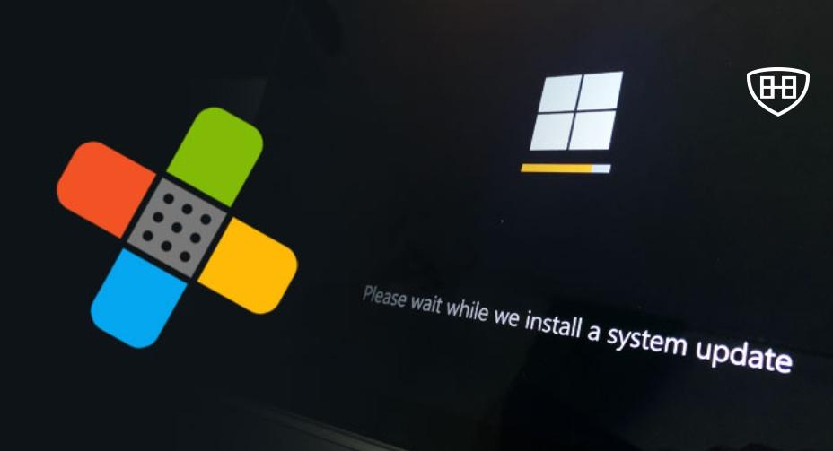

Microsoft parchea más de 70 vulnerabilidades: la importancia de mantener tus sistemas actualizados

Este mes, Microsoft lanzó su actualización de seguridad mensual, conocida como Patch Tuesday, para corregir más de 70 vulnerabilidades en sus sistemas y software. Dentro de estas correcciones, se encuentra una vulnerabilidad especialmente crítica: CVE-2024-49138, un fallo en el controlador de Windows Common Log File System (CLFS) que ya está siendo explotado activamente por atacantes.
Detalles de la vulnerabilidad CVE-2024-49138
El fallo afecta al controlador CLFS, utilizado por aplicaciones para escribir registros de transacciones. Esta vulnerabilidad podría permitir que un atacante autenticado eleve sus privilegios al nivel de “sistema”, obteniendo un control casi absoluto sobre el dispositivo comprometido.
Expertos en seguridad, como los de Rapid7, han señalado que las vulnerabilidades en CLFS no son nuevas. Según Adam Barnett, ingeniero principal en Rapid7:
“Los autores de ransomware que han abusado de vulnerabilidades anteriores de CLFS estarán encantados de explotar esta nueva falla. Es probable que veamos más vulnerabilidades zero-day en CLFS hasta que Microsoft realice un reemplazo completo del código base envejecido en lugar de aplicar correcciones específicas.”
Vulnerabilidad crítica en LDAP
Otra de las vulnerabilidades destacadas en esta ronda de parches es la CVE-2024-49112, una falla de ejecución remota de código en el protocolo Lightweight Directory Access Protocol (LDAP). Con una puntuación CVSS de 9.8/10, esta vulnerabilidad es extremadamente peligrosa, especialmente en redes empresariales donde los controladores de dominio suelen exponer LDAP.
Rob Reeves, ingeniero de seguridad en Immersive Labs, advierte:
“LDAP es esencial para la comunicación entre servidores y clientes en entornos empresariales. La baja complejidad del ataque y la falta de necesidad de autenticación hacen que esta vulnerabilidad sea particularmente preocupante.”
Un panorama preocupante pero constante
En lo que va de 2024, Microsoft ha corregido más de 1,000 vulnerabilidades, una cifra que se mantiene constante en comparación con años anteriores (1,088 en 2024 frente a 1,063 en 2023). Esto subraya la importancia de estar siempre alerta y garantizar que nuestros sistemas estén protegidos contra amenazas emergentes.
¿Por qué es crucial mantener tus sistemas actualizados?
Las actualizaciones de seguridad no solo corrigen vulnerabilidades conocidas, sino que también fortalecen la infraestructura frente a ataques futuros. Dejar sistemas sin actualizar es como dejar una puerta abierta en tu red: los atacantes siempre buscarán aprovechar los puntos débiles.
Consejos para mantenerte protegido
-
Usuarios finales:
- Configura tu sistema para que instale actualizaciones automáticamente. Si no lo haces, realiza comprobaciones manuales regularmente en Windows Update.
- Antes de actualizar, realiza una copia de seguridad de tus datos más importantes para evitar pérdidas en caso de errores inesperados.
-
Administradores de sistemas:
- Evalúa los parches en entornos de prueba antes de implementarlos en toda la red. Esto es especialmente importante para servidores críticos.
- Consulta recursos especializados como AskWoody para identificar posibles problemas derivados de las actualizaciones.
-
Revisión constante:
- Mantente al día con las noticias de seguridad para conocer nuevas amenazas y parches.
Reflexión final
El mantenimiento de sistemas es una tarea continua, pero esencial para prevenir incidentes de seguridad. Parafraseando a un experto del sector:
“La consistencia en la aplicación de parches es clave para mantener un entorno seguro, especialmente ante la creciente sofisticación de los atacantes.”
En un mundo donde el ransomware y los exploits zero-day son una amenaza constante, actualizar tus sistemas no es solo una recomendación: es una obligación.
💡 ¿Tu sistema está actualizado? Si no, este es un buen momento para hacerlo.
Escríbeme por cualquiera de las vías